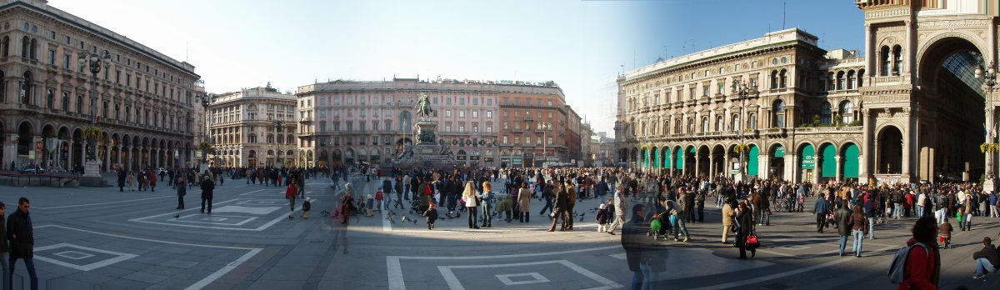

info e posizione
È il cuore monumentale e geografico di Milano, una vasta area rettangolare di circa 17.000 mq. La piazza è dominata dalla maestosa mole del Duomo, la cattedrale gotica simbolo della città, e circondata da alcuni dei monumenti più importanti, come la Galleria Vittorio Emanuele II e il Palazzo Reale.
Storia e descrizione

La forma attuale della piazza risale alla seconda metà del XIX secolo, frutto dei progetti dell'architetto Giuseppe Mengoni. Prima di allora, l'area era molto più ristretta e occupata da edifici medievali. L'apertura della piazza e della Galleria trasformò radicalmente il volto di Milano, rendendola una metropoli moderna.
Al centro della piazza si trova il monumento equestre a Vittorio Emanuele II, inaugurato nel 1896. Oggi la piazza è il principale punto di ritrovo per i milanesi e i turisti di tutto il mondo, palcoscenico di grandi eventi culturali, politici e sociali, nonché ingresso principale al distretto della moda e dello shopping.